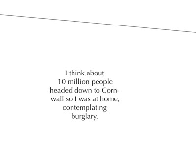

For this typographical project, we were asked to focus on a specific date in time. The date chosen was August 11th 1999, first and only total solar eclipse in our memories and the first one to be seen from the UK for 70 previously. The visual language of astronomy is used to fit the event described.
We felt a more personal side needed to be added to the piece. Inside the smaller planet-like shapes are accounts from various people, describing what they were doing during the eclipse. It is interesting to see all the stories together and to notice the difference in the person's location and attitude towards what they were seeing.